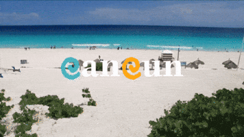
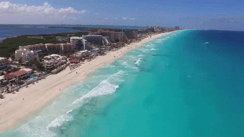
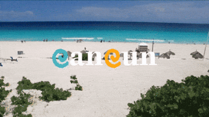
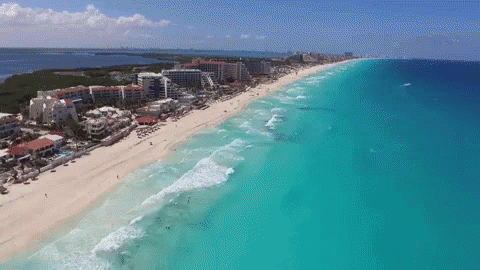

Cancún cuenta con una gran oferta de actividades que lo convierten en un paraíso para los amantes de la naturaleza y la aventura. Bucea o haz snorkel en los místicos cenotes que se ubican a sus alrededores; disfruta del mar practicando kayak o manejando una moto acuática. Este destino también es el lugar perfecto para relajarse en un spa o para pasar el día en un campo de golf, admirando las hermosas vistas mientras perfeccionas tus tiros.
Explora nuestras maravillosas atracciones, desde playas paradisíacas hasta montañas impresionantes.
 



C O N T A C T O
Whatsapp:
Correo Electronico:
Redes Sociales:
Facebook: Cancun